대규모 언어모델과 기반모델
컴퓨터는 어떻게 말을 숫자로 바꾸고, 그 숫자로 다음 단어를 맞히게 되었나. 단어 임베딩, 트랜스포머, 사후학습, ChatGPT, 그리고 범용·멀티모달 기반모델을 차례로 살펴본다.
자연어 처리와 단어 임베딩
단어를 숫자로 바꾸는 방법. 등장 횟수를 세는 방법에서 단어의 뜻을 좌표로 나타내는 방법으로.
1강에서 본 “인공지능 = 함수”를 떠올리자. 입력이 문장이라면, 함수에 넣기 전에 문장을 먼저 숫자로 바꿔야 한다.
자연어 처리 기술
- 프로그래밍 언어 (Programming Language) — 컴퓨터를 위해 만든 말
- 자연어 (Natural Language) — 사람이 쓰는 말
- 컴퓨터를 이용하여 유용한 작업을 수행하기 위해 자연어를 처리·이해하는 방법에 관한 연구
- 컴퓨터 공학의 고전적 주제 — 1954년 조지타운 대학과 IBM이 러시아어 60문장을 영어로 기계번역
- 그러나 2010년까지 기계번역은 인간 수준에 현저히 못 미침
- 음성인식 과제에서 딥러닝이 놀라운 성능 향상을 보임
- Amazon Alexa, Google Assistant, Apple Siri 등 상업 시스템이 딥러닝 방식을 채택
- 음성 인식, 기계 번역, 대화(챗봇)로 확산
2010년대 중반의 자연어 처리 — 언어를 “이해”하지 못하는 인공지능
“Machines that truly understand language would be incredibly useful. But we don’t know how to build them.”
– Will Knight, MIT Technology Review (2016)
품사 분류, 구문 분석
언어학자 수준까지 분석 가능
Meaning: 중의·함의·은유·반의
Context: 문맥·맥락·상황
Reasoning: 상식(common sense)이 필요
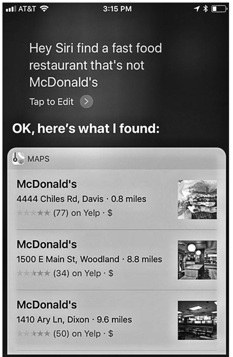
인공신경망에 텍스트 입력하기
- 단어를 표현하는 가장 단순한 방법 = 세어 보기 (count-based approach)
- 자주 사용되는 단어 사전(vocabulary)을 구축 — 영어라면 a로 시작하는 단어부터 z로 시작하는 단어까지 알파벳 순으로
- 이진 표현법: 단어 하나 = 사전에서 그 단어의 자리만 1, 나머지는 모두 0인 숫자 열
- 문서 전체 = 등장한 단어들의 숫자 열을 모두 합친 것 (등장 여부 0/1 또는 등장 횟수)
자기 자리만 1, 나머지는 0
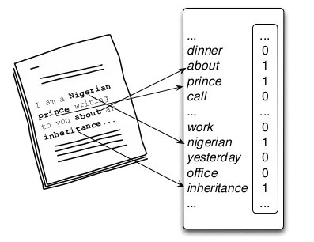
이 숫자 열은 “사전의 몇 번째 단어인가”만 말해 줄 뿐, 단어의 뜻은 담지 않는다.
간단한 스팸 메일 분류기
| 사전 | 등장? |
|---|---|
| aardvark | 0 |
| … | … |
| about | 1 |
| … | … |
| call | 0 |
| … | … |
| prince | 1 |
| … | … |
| nigerian | 1 |
| … | … |
| zucchini | 0 |
= 사전의 단어 수만큼
1강의 필기숫자 인식과 같은 구조다. 입력이 픽셀 784개에서 “단어 수만큼”으로 바뀌었을 뿐이다.
더 나은 방법은 없을까?
- 세어 보기(count-based) 방식의 문제점 — 단어 하나마다 단어 사전 개수(수만~수십만)만큼의 숫자 열이 필요. 그중 1은 단 하나, 나머지는 전부 0 → 공간의 낭비
- 단어의 특징을 숫자로 표현하기 — 단어의 특성을 나타내는 변수를 정하고, 단어마다 값을 매긴다
몇 개?
| 특징 | Man | Woman | King | Queen | Apple | Orange |
|---|---|---|---|---|---|---|
| 성별 | −1 | 1 | −0.95 | 0.97 | 0.00 | 0.01 |
| 왕족 | 0.01 | 0.02 | 0.93 | 0.95 | −0.01 | 0.00 |
| 나이 | 0.03 | 0.02 | 0.7 | 0.69 | 0.03 | −0.02 |
| 음식 | 0.04 | 0.01 | 0.02 | 0.01 | 0.95 | 0.97 |
| … | … | … | … | … | … | … |
- 몇 개의 변수가 있으면 세상의 각 단어를 잘 구분할 수 있을까?
- 연구자들은 300개 정도의 변수면 적절하다는 것을 발견
- 다만, 누가 각 변수를 지정하고, 값을 어떻게 채울까?
단어 임베딩 (Word Embedding)
- 인공신경망이 스스로 단어의 특징을 학습한 결과 — 축의 이름은 없지만, 숫자 300개가 단어의 “뜻”을 담는다
각각의 단어를 300차원의 공간에 좌표로 찍어 놓은 것!
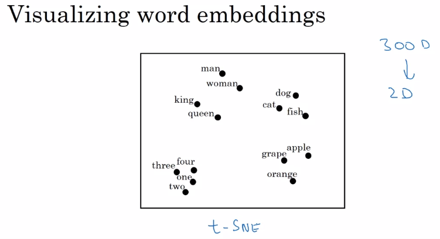
https://www.coursera.org/learn/nlp-sequence-models/lecture/6Oq70/word-representation
단어 임베딩의 특징
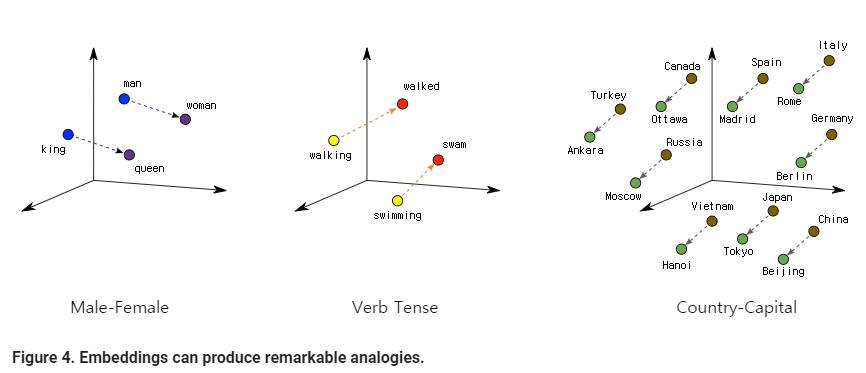
“king” – “man” + “woman” = “queen”
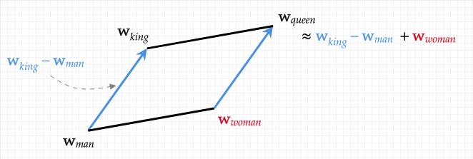
단어가 좌표가 되면 단어끼리 더하고 뺄 수 있다. “왕”에서 “남자”를 빼고 “여자”를 더하면 “여왕” 근처에 도착한다.
사랑 + 이별 = ?
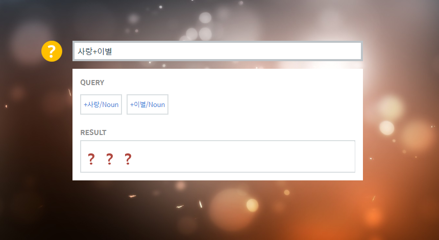
사랑 + 이별 = 추억
Word2Vec 특허 (US 9,037,464 B1)
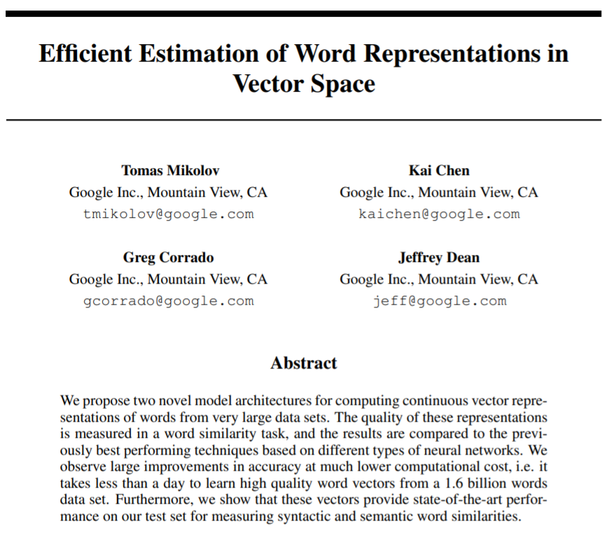
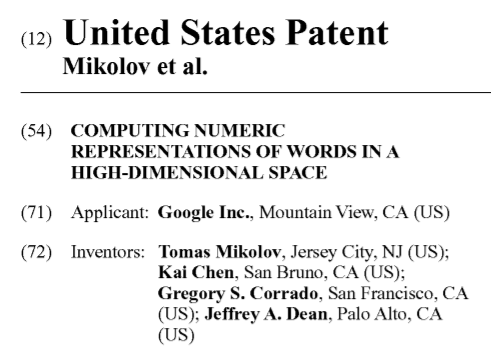
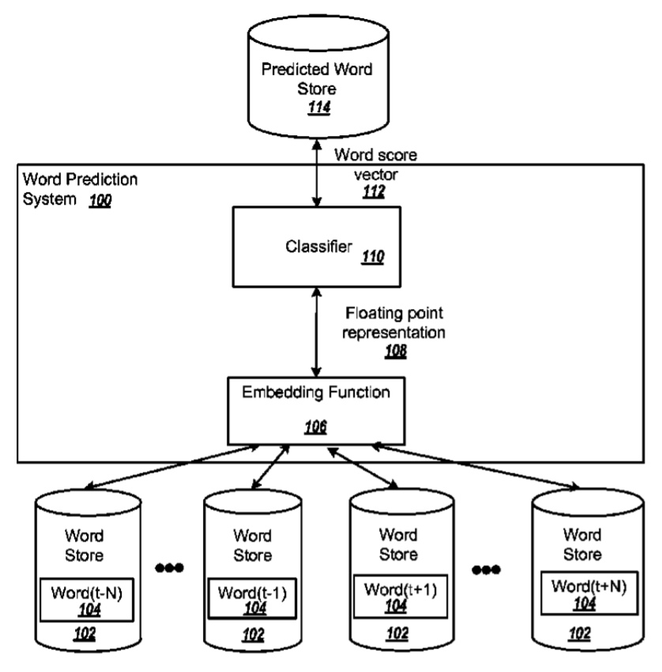
단어 의미의 변화
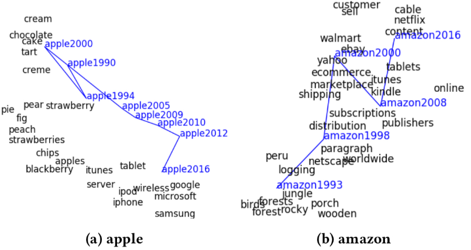
임베딩은 “사전에 적힌 뜻”이 아니라 “그 시기 사람들이 그 단어를 어떻게 썼는가”를 담는다.
https://blog.acolyer.org/2018/02/22/dynamic-word-embeddings-for-evolving-semantic-discovery/
시퀀스 데이터와 순환 신경망
문장은 단어의 “순서”다. 앞에서 본 단어의 기억을 옆으로 넘겨 가며 읽는 신경망, 순환 신경망(RNN).
앞 섹션의 스팸 분류기는 단어의 순서를 무시하고 “있다/없다”만 세었다. 그러면 “개가 사람을 물었다”와 “사람이 개를 물었다”가 같은 문장이 된다.
시퀀스 데이터
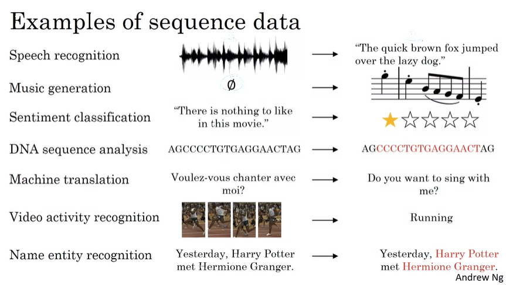
https://www.coursera.org/learn/nlp-sequence-models/lecture/0h7gT/why-sequence-models
Intuition — 보이지 않는 “상태”가 있다
- 잠재 변수 (Latent Variable, Hidden Variable)
- “관측되는 현상은 관측되지 않는 잠재 변수의 발현”
- 잠재 변수: 기상의 상황 · 관측 현상: 기온, 습도, 구름량, …
- 우리는 잠재 변수를 곧바로 알 수 없음
- 관측 값을 이용하여 잠재 변수를 추정
- 새로운 현상이 관측되면 기존 잠재 변수를 업데이트
- 이 숨은 상태(hidden variable)가 “지금까지 본 것”을 요약한다
순환 신경망 (RNN)의 기본 개념
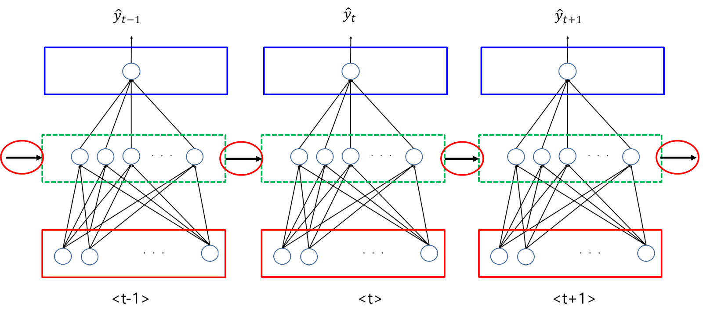
⟨t−1⟩ 단계 상태 정보(Hidden Variable)로 ⟨t⟩ 단계 상태 정보 업데이트
RNN 모델 – 영화평 읽기
문제 – 다음 영화평은 긍정적인가? (0 / 1 이진분류) “This movie is a true masterpiece.”
- 단어를 (임베딩 숫자로 바꿔) 하나씩 순서대로 넣는다
- 각 단계의 상태(기억)는 “이전 단계의 상태 + 지금 들어온 단어”로 갱신된다 — ⟨t−1⟩ 단계 상태 정보로 ⟨t⟩ 단계 상태 정보를 업데이트
- 그래서 마지막 상태에는 문장 전체의 정보가 순서대로 쌓여 있다
예제 (Many-to-One) – 감성 인식
- 마지막 단계만 결과 값 출력 — 문장을 끝까지 읽은 뒤 “긍정(1) / 부정(0)”을 판단
- 학습 방법은 1강과 같다: (영화평, 정답) 쌍을 잔뜩 주고, 예측 오차를 줄이는 방향으로 가중치를 조금씩 고친다
예제 (One-to-Many) – 음악 작곡
- 이전 단계 예측 값을 다음 단계 입력으로 활용 — 시작 신호 하나만 주면 음이 차례로 이어진다
- 수많은 악보로 “다음 음”을 맞히도록 학습한 결과
- 이 구조가 곧 뒤에서 볼 “다음 단어 예측” 언어모델의 원형


예제 (Many-to-Many) – 기계 번역
- 앞부분 = 인코더: 입력 문장을 단어 순서대로 읽어, 마지막 상태에 문장 전체의 정보를 담는다
- 중간 = 문맥 벡터(context vector): 인코더가 남긴 숫자 배열. 뒷부분에 넘겨주는 유일한 정보
- 뒷부분 = 디코더: 문맥 벡터에서 출발해, 작곡 예제처럼 단어를 하나씩 이어 쓴다
실제 seq2seq 모델의 문맥 벡터는 보통 수천 개: 초기 seq2seq(Sutskever et al. 2014)는 층당 1,000개, Google NMT(2016)는 층당 1,024개를 8층으로 쌓았다. 단어 하나를 담는 임베딩(300개)보다 훨씬 크다.
기계 번역 – Google Neural Machine Translation (2016)
- 종전 기술 – 규칙 기반 접근법
- 문장을 여러 부분으로 쪼개고, 규칙을 적용하여 다른 언어로 옮긴 다음, 다시 조합
- 2016년 9월 Google Neural Machine Translation (GNMT) 도입
- 입력 문장의 각 단어를 순차적으로 순환신경망에 입력
- 순환신경망의 은닉 계층이 단어의 순서를 반영한 정보를 기억
- 그 정보를 이용하여 다른 언어의 문장을 생성 — 입력 문장에서 곧바로 번역문으로
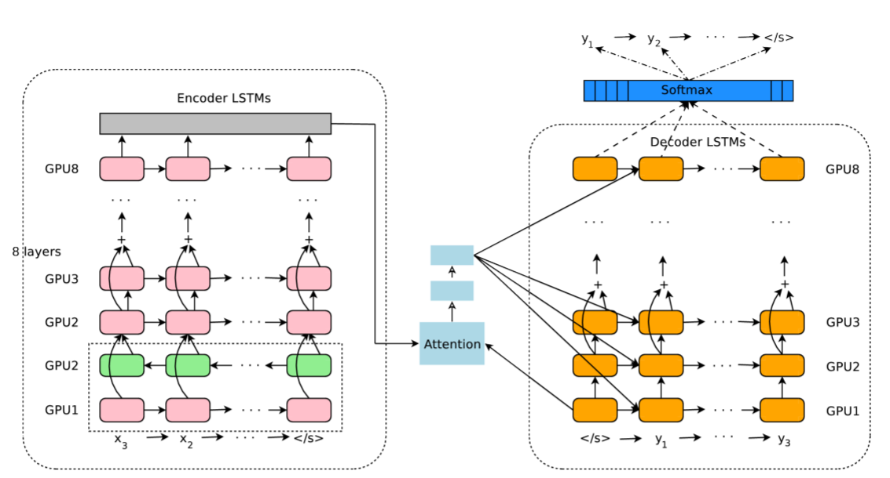
언어모델과 트랜스포머
다음 단어 하나를 맞히는 것. 그것이 언어모델의 전부이고, 트랜스포머는 그 일을 아주 잘하는 구조다.
작곡 예제에서 “다음 음”을 이어 붙였듯, 이번에는 “다음 단어”를 이어 붙인다.
언어모델 (Language Model)
사람이 말했을 법한 문장은?
| Jane went to the store. | ○ | 문법 이해 |
| store to Jane went the. | ✕ | |
| Jane went store. | ✕ | |
| Jane goed to the store. | ✕ | 어형 변화 |
| The store went to Jane. | ✕ | 의미 분석 |
| The food truck went to Jane. | ○ | 의미 분석의 예외 |
언어 모델 = P(text) — “이 문장이 나올 법한 정도”를 확률로 매기는 함수
언어모델의 원리
질문 – 다음에 올 단어는?
Jane had a headache yesterday. She went to the .
앞 문장(두통)까지 읽고 있어야 “pharmacy”에 가장 높은 확률을 줄 수 있다.
언어모델의 핵심 = 다음 단어 예측하기
- 조건부 확률의 연쇄 법칙 (chain rule)
- P(“I”) – 첫 단어가 “I”일 확률
- P(“love” | “I”) – “I” 다음에 “love”가 올 확률
- P(“you” | “I love”) – “I love” 다음에 “you”가 올 확률
언어 모델을 이용한 작문
다음에 올 단어 예측하기 — 예측한 단어를 다시 입력으로 넣어 이어 쓴다
작곡 예제의 “다음 음”이 “다음 단어”로 바뀌었을 뿐, 구조는 같다.
RNN 언어모델의 한계 – Long-Term Dependency 문제
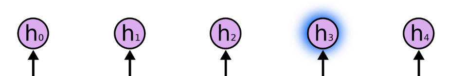
I grew up in France. I speak fluent ______.
→ 바로 앞에 “France”가 있으니 쉽다
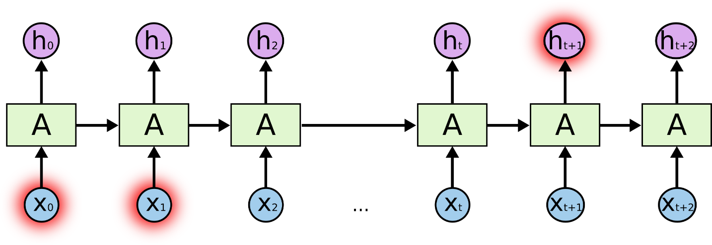
I grew up in France … (수십 문장) … I speak fluent ______.
→ “France”가 너무 멀리 있다
문장이 길어지면 상태 ht가 멀리 떨어진 정보를 반영하지 못하는 한계
Attention 기법 (2014) — 어디를 볼지 정하기
- Long-Term Dependency 문제의 해결 — 멀리 있어도 “관련 있는 단어”를 직접 찾아본다
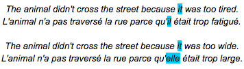
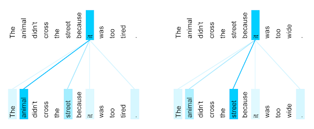
https://ai.googleblog.com/2017/08/transformer-novel-neural-network.html
Attention 기법 (2014) — 입력된 단어 중 어디를 주목할지 학습
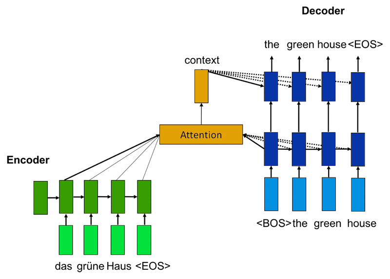
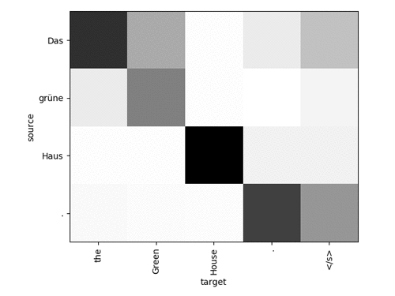
https://aws.amazon.com/blogs/machine-learning/train-neural-machine-translation-models-with-sockeye/
Google – Transformer 모델 (2017)
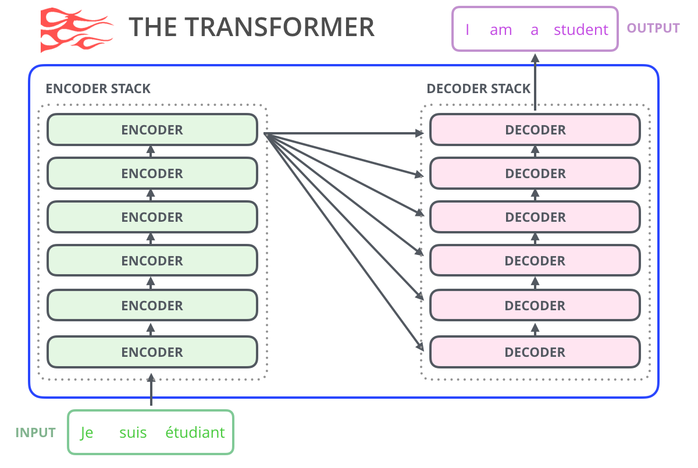
- 순환 신경망(RNN)의 두 가지 한계
- 단어를 순서대로 하나씩 처리해야 하므로 병렬 처리가 불가능
- 멀리 떨어진 단어 사이의 관계(전역 의존성)를 학습하기 어려움
- Transformer: 순환 구조를 버리고 attention만으로 인코더·디코더를 만든 모델 — “Attention Is All You Need” (Vaswani et al. 2017)
Multi-headed Self Attention 기법을 활용하여 기존 Seq2Seq 모델 개선
Transformer 모델 특허
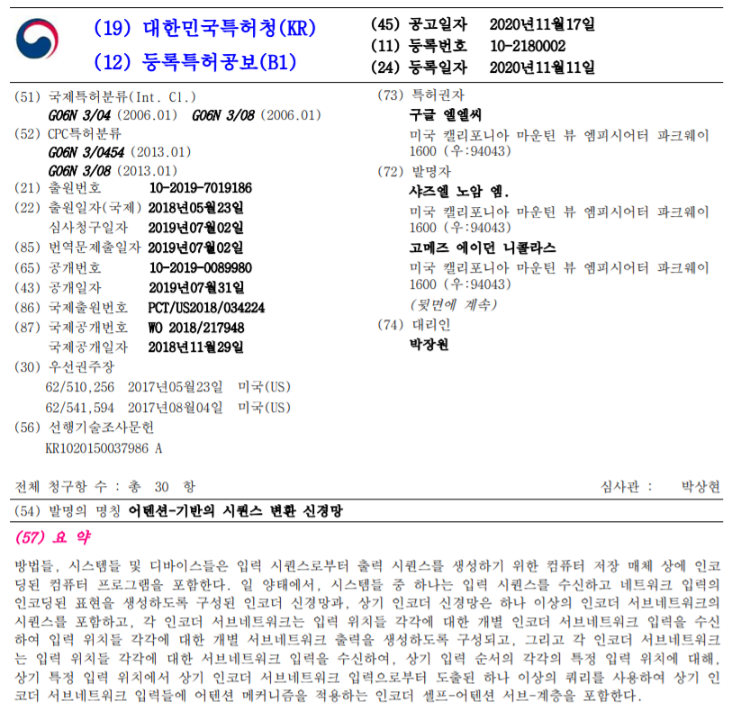
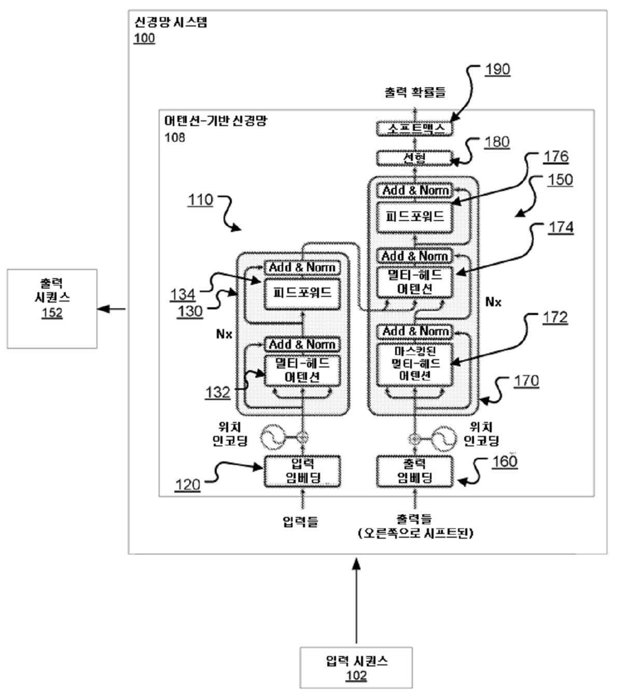
등록특허 10-2180002 청구항 1
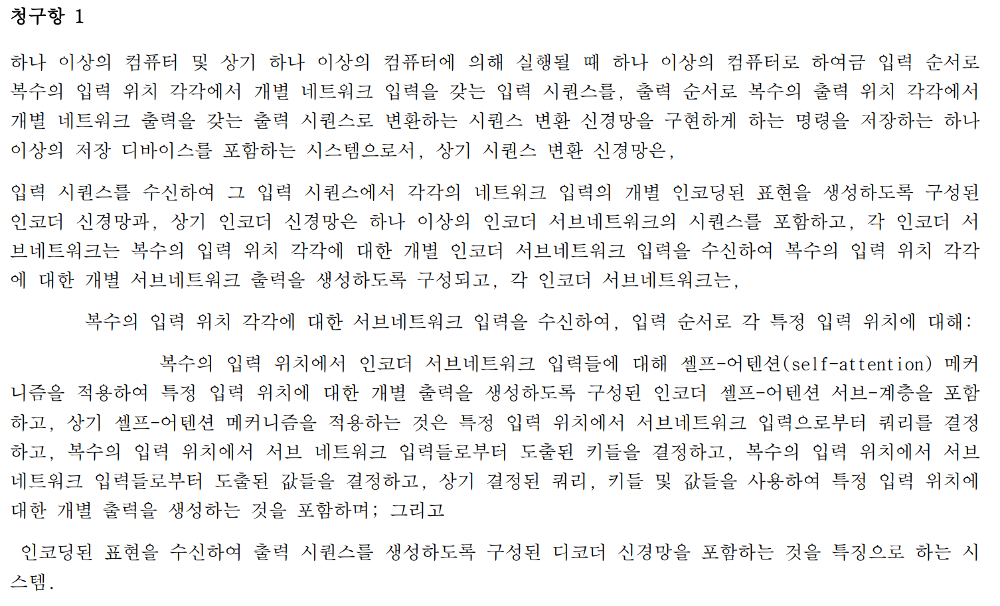
- 입력 시퀀스를 받아 표현을 만드는 인코더 신경망
- 각 입력 위치에 대해 셀프-어텐션을 적용하는 서브네트워크
- 입력으로부터 쿼리·키·값을 만들어 출력을 계산
- 인코딩된 표현에서 출력 시퀀스를 생성하는 디코더 신경망
특허는 “아이디어”가 아니라 이렇게 요소들의 조합으로 정의된 “구성”을 보호한다. 다음 섹션의 BERT·GPT 특허는 이 청구항에서 인코더와 디코더를 각각 떼어 낸 것이다.
“셀프-어텐션”에 대한 직관적 이해
“누구 이런 정보 가진 사람?” — 각 단어가 다른 단어들에게 던지는 질문
“나는 이런 정보 가졌어!” — 각 단어가 내거는 이름표
만약 (Query, Key) 매칭이 잘 된다면 “다음 계층으로 이 정보를 넘겨줘” — 실제로 전달되는 내용
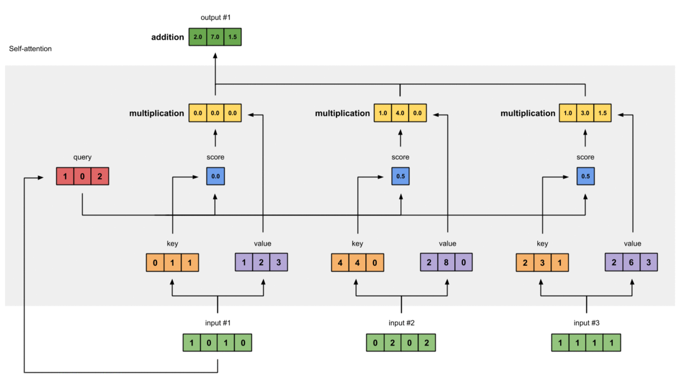
https://towardsdatascience.com/illustrated-self-attention-2d627e33b20a
“셀프-어텐션”의 장점 — 더 빨리 배우고, 더 잘 번역한다
- 손쉽게 병렬처리 가능
- 순환 신경망의 순차적인 특성이 없음 → 긴 학습·추론 시간, 높은 자원 사용 문제 완화
- 전역 의존성 문제 해결
- 먼 위치들 사이의 의존성을 효과적으로 학습
- 학습이 더 쉽고 빠른데도 기계번역에서 최고 성능(state-of-the-art) 달성
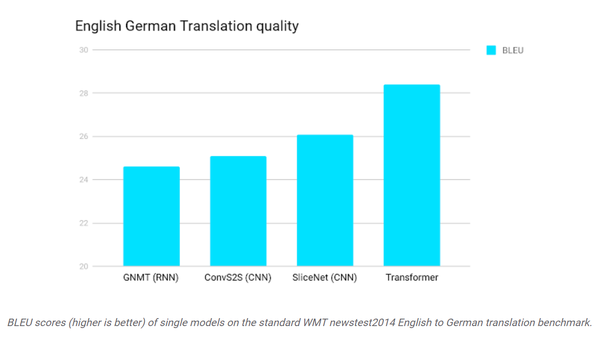
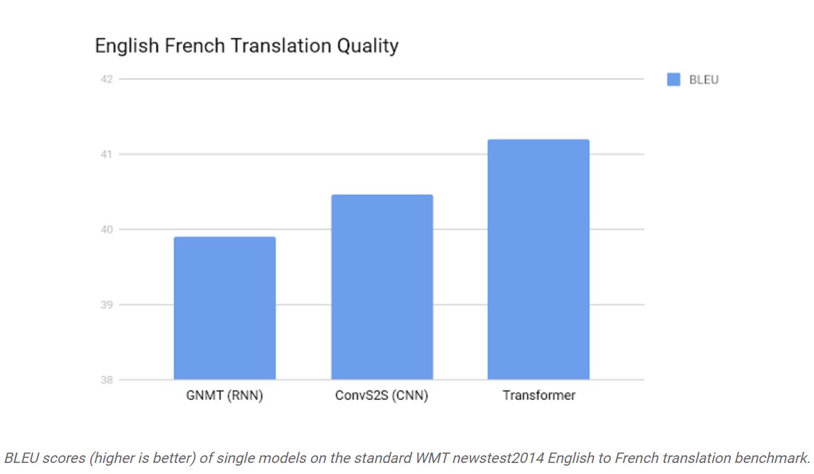
https://ai.googleblog.com/2017/08/transformer-novel-neural-network.html
AlphaFold – “셀프-어텐션” 신경망의 활용
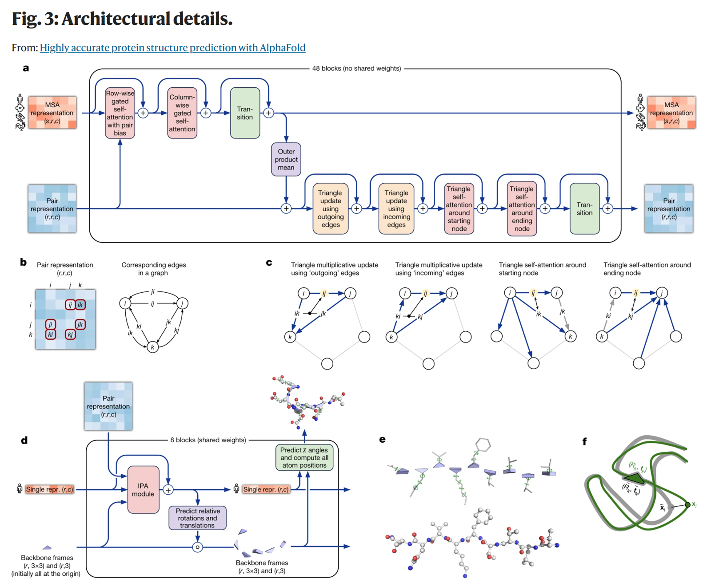
언어를 위해 만든 구조가 언어 밖(단백질, 이미지, 소리)에도 적용된다
https://www.nature.com/articles/s41586-021-03819-2/figures/3